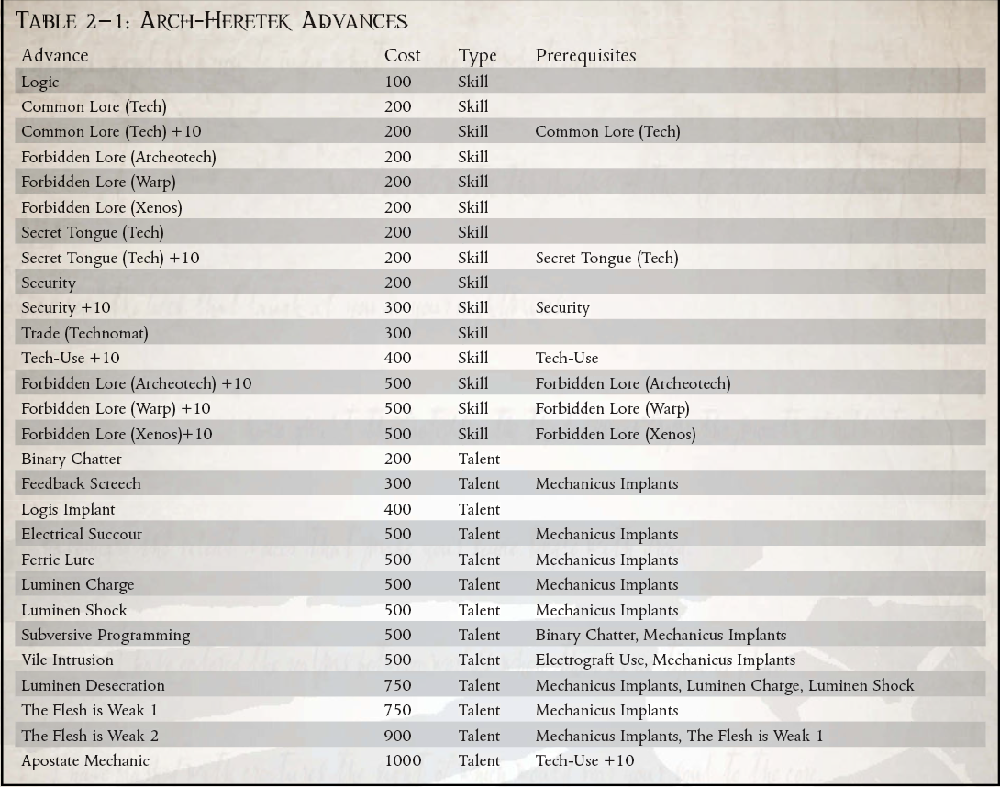

“那些傻子和他们谈论的精神和仪式；技术是因果，机制和结果，不应该像那些红袍傻瓜所认为的那样克制和处理不当。”
——Rephenesti Korvane，Heretek
在星际旅行的海盗和犯罪分子经常难以维持他们船只的高科技，缺乏必要的专家人员来执行维护仪式和安抚顽固的机器精神。虽然有些人可以与真正的技术牧师签订劳动合同，但这远非唯一的选择。
在 Koronus Expanse 中存在着那些违抗机械神教命令和传统的人，他们选择在没有机械教教派批准的情况下尝试技术并试图了解它是如何运作的。这些人被谴责为技术异端或异端，因为他们的亵渎行为而被追捕，如果他们被抓住，他们将毫不留情。这些人中的许多人为了相互保护和非法研究的利益而聚集在一起。这些团体经常发现，雇佣海盗和走私者给了他们生存所需的自由和机动性，并有机会在机械教的视线之外使用先进的机器工作。
多年来，出现了某些异端
在 Koronus Expanse 伴随着臭名昭著的行为的故事。无论是图勒门徒的前成员还是车床特工，他们险恶的名声在从 Footfall 到 Damaris 的出身低微的民众中产生了一个集体绰号。现在在广域网，一个倒下的拥有足够技能和声名狼藉的技术牧师很可能会被民众贴上 Arch-Heretek 的标签。尽管对于什么是 Arch-Heretek 没有设定标准，但就他们对机器的理解和熟练程度而言，它们通常可以与真正的技术牧师和探索者相媲美。他们中最伟大的曾经是技术牧师，现在已经不再崇拜 Omnissiah。 Arch-Hereteks 受到虚空犯罪分子的高度评价，无论是因为他们在所有技术方面的专业知识还是他们独特的能力。
机械修会小心翼翼地保护他们所拥有的知识，并残酷地强制他们对技术知识的垄断。那么，成为异教徒就很容易了——只要在技术和科学问题上挑战他们的权威就足够了。
然而，成为 Arch-Heretek 更具挑战性。为了生存足够长的时间以获得真正的技能并掌握技术，需要相当狡猾。要成为与火星祭司平起平坐的人，还需要更多的知识，足以用先进的机械来补充肉体。
所需职业：除克鲁特人、兽人、导航员、星语者或传教士以外的任何职业（注意，这允许非探索者获得这些进步，或者探索者可以使用此职业以溢价购买进步，以后会更便宜地获得）。
替代等级：等级 2 或更高 (7,000 xp)
其他要求：探索者必须具备技术使用技能，并且在未经机械神教批准的情况下对技术进行过实验。或者，探索者必须是一名违反机械教法律和约束的技术牧师。
特殊：Arch-Hereteks 自动获得天赋敌人（机械师）。

背道者机械师（天赋）
先决条件：科技使用 +10
探索者用奥术技术改造自己，现在拥有通常属于火星祭司的技术奥术力量。出于满足先决条件的目的，Explorer 被视为拥有 Mechanicus Implants Trait。他没有获得该特质的任何正常效果，他可能不一定拥有相同的植入物，而是他自己设计的等效装置。
颠覆性编程（天赋）
先决条件：机械植入物
探险者设计了一种二元暗语，可以混淆和颠覆机仆和其他机器生物的编程，让他能够指挥他们的行动。作为一个半动作，探索者可以尝试指挥一个具有机器特性且智力为 20 或更低的生物。进行反对具有挑战性的 (+0) 技术使用与意志力测试。如果他成功了，该生物必须在下一轮遵循探索者的命令。探索者可以通过在随后的回合中花费半行动来继续保持控制。如果他选择这样做，他必须在四轮后进行另一次对抗测试以保持链接。命令必须简单且可在一轮内完成。一些例子包括“逃跑”、“摔倒”和“攻击最近的目标”。
LUMINEN 亵渎（天赋）
先决条件：机械植入物
探险者的植入物会产生强烈的技术巫术脉冲，使他能够在他面前禁用技术。一个手势和最复杂的设备就会停止运行。成功的挑战 (+0) 弹道技能测试使他能够将能量引导至 10 米内的单个目标。这是一种远程攻击，可以躲避但不能被Fields或其他保护装置阻挡。如果目标携带任何电子设备——包括能量武器和仿生系统——那么它们将停止运行 1d5 轮，就好像它们的能量已经耗尽一样。如果目标是车辆，则它会立即遭受暴击，就像用户获得正义之怒一样，暴击结果减去 1（结果为零导致没有暴击）。
邪恶的入侵（天赋）
先决条件：使用电移植物，机械植入物
探险者擅长获取最复杂的机器灵魂的知识，用他自己创造的废代码和恶意灵魂攻击它们，直到它们在压力下崩溃。探险者在所有技术使用和安全测试中获得 +20 加值，以未经授权访问电子系统，如 Cogitator 或电子锁，只要角色可以使用他的植入物直接连接到它。